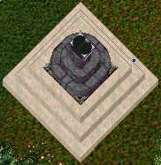
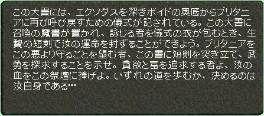
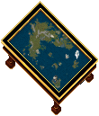
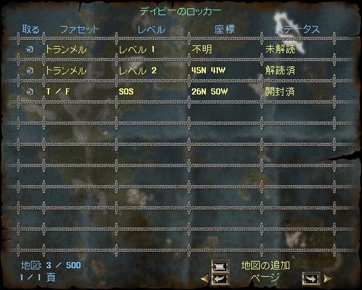
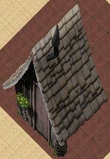

Exodus召喚の儀式
Exodusの信奉者がExodusを儀式により呼び戻そうとしているようです。
儀式に関する情報を得て、必要なアイテムを準備することで、Exodusと戦うことができるようになります。
１．儀式に関する情報
儀式に関する情報は、イルシェナーのVer-Lor-Reg（旧ガーゴイルシティ）の近くにいる
Exodusの信奉者（Arch Zealot）から得ることができます。
このNPCは、儀式に必要な装備品をガーゴイル用に変成もしてくれます。
２．儀式に必要なアイテム
儀式に必要なアイテムは4種類あり、生産スキルで作成することができます。
これらのアイテムは、作成してから1週間で失われてしまいます。
なお、Exodus Dungeonでの戦闘または補給品からの盗みでも入手することも可能です。
（１） exudus sacrificial dagger [エクソダス生贄の短剣]
exudus sacrificial dagger [エクソダス生贄の短剣]
鍛冶スキルで作成可能（その他のカテゴリ）。
作成必要スキルは95.0で、スキル120での成功率は50％。
作成に必要な材料は下記のとおり。piece of blackrockは、採掘時に入手できるアイテム（1％程度？）。
 ingot×12
ingot×12 blue diamond×2
blue diamond×2 fire ruby×2
fire ruby×2 small piece of blackrock[ブラックロックの欠片]×10
small piece of blackrock[ブラックロックの欠片]×10
（２） robe of rite [儀式の衣]
robe of rite [儀式の衣]
裁縫スキルで作成可能（シャツとパンツのカテゴリ）。
作成必要スキルは101.5で、スキル120での成功率は92.5％。
作成に必要な材料は下記のとおり。gold dust[砂金]についても、作成方法を示す。
 leather×6
leather×6 abyssal cloth×6
abyssal cloth×6 gold dust[砂金]×5
gold dust[砂金]×5- fire ruby×1
gold dust [砂金]は、錬金スキル（素材のカテゴリ）で作成可能
作成必要スキルは90.0で、スキル100での作成成功率は33.4％
材料は 1000gp
1000gp
（３） exodus summoning rite [エクソダス召喚の魔書]
exodus summoning rite [エクソダス召喚の魔書]
書写スキルで作成可能（その他のカテゴリ）。
作成必要スキルは95.0で、スキル100での成功率は50％。
作成に必要な材料は下記のとおり。
 taint[汚染物]×5
taint[汚染物]×5 daemonbone×5
daemonbone×5 summon daemon scroll×1
summon daemon scroll×1 daemon blood×5
daemon blood×5
（４） exodus summoning alter [エクソダス召喚祭壇]
exodus summoning alter [エクソダス召喚祭壇]
大工スキルで作成可能（その他のカテゴリ）。
作成必要スキルは大工95.0および魔道(Magery)75.0で、スキル100での成功率は10％。
作成に必要な材料は下記のとおり。nexus core [ネクサスコア]についても、作成方法を示す。
 board×100
board×100 high quality granite[高品質な花崗岩]×10
high quality granite[高品質な花崗岩]×10- small piece of blackrock[ブラックロックの欠片]×10
 nexus core[ネクサスコア]×1
nexus core[ネクサスコア]×1
nexus core [ネクサスコア]は、錬金スキル（特殊混合物のカテゴリ）で作成可能
作成必要スキルは90.0で、スキル100での作成成功率は33.4％
材料は下記のとおり。
 crushed glass[割れたガラス]×5
crushed glass[割れたガラス]×5 dark sapphire×5
dark sapphire×5 spider silk×10
spider silk×10 mandrake root×10
mandrake root×10
３．儀式の実施
儀式はTrammelまたはFeluccaにある徳の神殿で行います。
- 2人以上のパーティーで徳の神殿へ行く。この時点で 儀式の衣を装備するとよい
- 召喚祭壇を徳の印の位置に設置する（下の画像は設置した時点のもの）。設置した祭壇は15分で消滅する。中央にある本をダブルクリックすると、儀式に関する指示が記載されている
- エクソダス召喚の魔書をダブルクリックし、祭壇中央の本をターゲットに指定する
- エクソダス生贄の短剣をダブルクリックし、祭壇中央の本または自分自身をターゲットに指定する
本を指定した場合はカルマ+10000、自分自身を指定した場合カルマ-10000
3〜4は、パーティー全員が行わなければならない
- 祭壇をクリックし、儀式をとり行うと、Ver-Lor-Regへ移動し、Clockwork Exodusとの戦闘になる。儀式の衣もこのときに失われる。


長期報奨
Davies' Locker [デイビーズのロッカー]
アカウント暦96ヶ月以上の報奨です。
Deedの状態で受け取り、ダブルクリックして家に設置します。
下の画像は、"長い側面が南向き"で設置した状態です。
ロッカーをダブルクリックすると、収めた地図およびSOSボトルの情報が表示されます。
また、この状態で"地図の追加"のボタンを押すと、ロッカーに収めたい地図またはSOSを指定することができます（最大500枚）。
設置したロッカーは、斧を使ってDeedに戻すことができますが、地図などが収められている状態でも、それらの情報は保持されています。
収めた地図の量に関わらず、ストレージは消費しません。


Garden Shed [物置小屋]
アカウント暦180ヶ月以上の報奨です。
Deedの状態で受け取り、ダブルクリックして家に設置しますが、設置時にアカウント暦が180ヶ月以上必要です。
下の画像は、"南向き"で設置した状態です。
物置小屋には125アイテムを収納できるコンテナが2つあり、収納小屋をダブルクリックすると、どちらかのコンテナが開きます。
アカウント暦180ヶ月未満でも、コンテナを使用することは可能です。
コンテナ内のアイテム量に関わらず、ストレージは消費しません。
